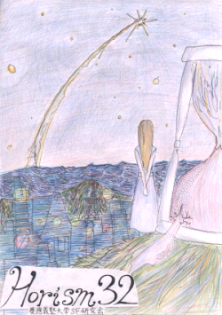

「HORIZM 32」とは当研究会が毎年ほぼ一回発行している会誌HORIZMの2008年号です。HORIZMの起源は1970年代に遡り、年によっては一年に数冊刊行されるなどの紆余曲折を経ながら今年で32号を迎えました。本年度は50篇を越える書評を柱とし、100ページを越える(ここ数年では)比較的厚めの会誌となっています。
本誌は文学フリマ・三田祭・コミックマーケット等で販売しています。
今回はSFマガジン2006年6月号に掲載された「オールタイムベスト海外短篇SF」の全作品を対象としています。このランキングは"オールタイム"という名にふさわしく、古くは"SFの父"ウェルズの「タイムマシン」(1896年)から新しきは気鋭の新人テッド・チャンの「あなたの人生の物語」(1999年)まで、ほとんどの有名作家を網羅しています。一方で、残念ながら現在では入手困難な作品も数多く含まれていましたが(だいたい全体の1/3)、本誌には全作品の書評を掲載することができました。ディレイニー、ティプトリー、アシモフ、イーガン、エリスン、ディック……馴染の作家がいましたらぜひ本誌を手に取ってください。
作品の一覧については下記のアンサンブルさんのサイトをご覧ください。
[見本書評]
・ハーラン・エリスン「死の鳥」
・ジェイムズ・ティプトリー・ジュニア「ビームしておくれ、ふるさとへ」
[参考リンク]
・翻訳SF短篇ファン度調査(06年オールタイムベスト版)(海外SF同好会アンサンブル調査)
創作ワークショップとは当研究会の活動の一つで、各々が創作した小説を皆で読み会わせ、互いに批評しあうものです。本年度は「春」をテーマに据えて作品を募集し、「春のロボット」・「秒速30万キロメートル」の2作品を掲載することにいたしました。
ご一読なさいましたら、ぜひ当サイト管理人までご感想をお送りください。
top » publications » HORIZM32